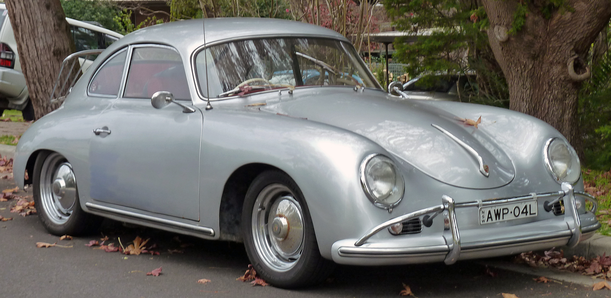

С момента возвращения в Штутгарт все кузовные панели изготавливались из стали, от алюминия отказались. Завод начинал с купе и кабриолетов и 1100-кубовых моторов мощностью всего в 40 лошадиных сил(29,42 кВт), но скоро выбор расширился: к 1954 году продавались версии 1100, 1300, 1300A, 1300S, 1500, и 1500S. Конструкция постоянно улучшалась: объём и мощность двигателей продолжили свой рост, появились дисковые тормоза на всех колёсах и синхронизированная КПП, были предложены новые варианты кузовов — хардтопы и родстеры. Агрегаты от Volkswagen постепенно заменялись на собственные. Например, в период выпуска серии 356А (1955—1959) уже можно было заказать двигатель с четырьмя распредвалами, двумя катушками зажигания, и другими оригинальными компонентами. Серию А сменила B (1959—1963), а её — C (1963—1965). Общий объём выпуска всех модификаций составил немногим более 76 тысяч. Параллельно создавались модификации для гонок (550 Spyder, 718 и др.). В 1951 году Фердинанд Порше в возрасте 75 лет скончался от сердечного приступа — его здоровье было подорвано пребыванием в тюрьме.
